Portail Captif avec Authentification RADIUS
pfSense · FreeRADIUS · VMware Workstation · Windows 10 & Ubuntu
Ce lab déploie une infrastructure de contrôle d'accès réseau complète : un portail captif pfSense conditionnant l'accès à Internet à une authentification préalable, adossé à un serveur FreeRADIUS intégré pour centraliser la gestion des identités. L'ensemble est testé depuis deux systèmes clients différents, Windows 10 et Ubuntu, afin de valider le fonctionnement de bout en bout de la chaîne pfSense → FreeRADIUS → Portail Captif.
Environnement
Hyperviseur VMware Workstation
Pare-feu pfSense (WAN + LAN pfsense-radius)
Auth FreeRADIUS, intégré à pfSense
Clients Windows 10, Ubuntu
1. Présentation de l'Environnement
L'infrastructure repose sur VMware Workstation, avec pfSense comme pare-feu/routeur, FreeRADIUS comme serveur d'authentification, une machine Windows 10 comme poste d'administration, et une machine Ubuntu comme client de test.
La VM pfSense est configurée avec deux cartes réseau : une interface WAN pour l'accès à Internet (en NAT), et une interface LAN nommée « pfsense-radius » sur un LAN segment isolé, qui permettra aux machines Windows 10 et Ubuntu de communiquer avec pfSense sans interférer avec le réseau physique hôte.
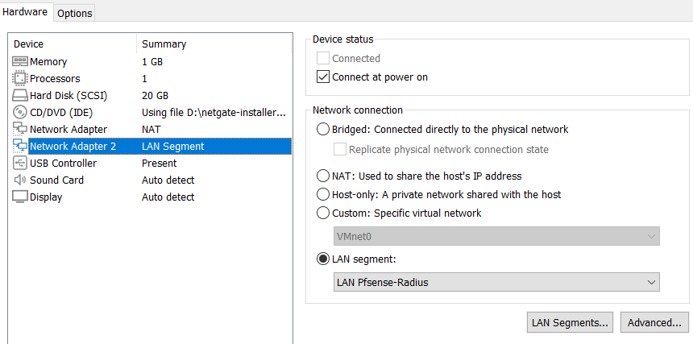
2. Premier Démarrage et Vérifications Initiales
Au premier démarrage, pfSense présente son interface console en mode texte, qui permet d'effectuer des configurations de base : attribution des interfaces réseau, paramétrage des adresses IP, et accès à un shell BSD. On y voit l'adresse IP attribuée à l'interface LAN (192.168.1.1/24), qui servira à accéder à l'interface web depuis Windows 10.
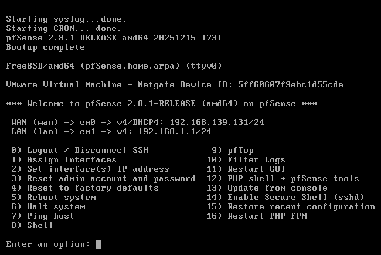
Avant de procéder à la configuration complète, on s'assure que pfSense dispose d'un accès à Internet via son interface WAN, indispensable pour installer les paquets nécessaires (notamment FreeRADIUS) depuis les dépôts en ligne.
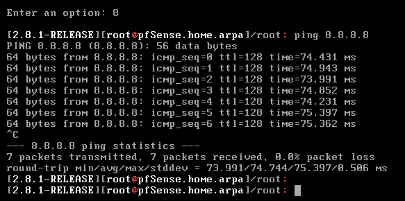
3. Configuration du Poste d'Administration Windows 10
La machine Windows 10 joue le rôle de poste d'administration. Sa carte réseau est placée sur le LAN segment « Pfsense-Radius », ce qui lui permet d'accéder à l'interface web d'administration de pfSense.
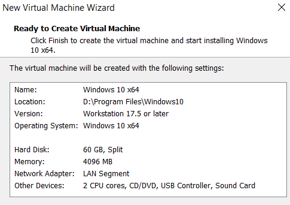
Le client DHCP de pfSense, actif sur cette interface, attribue automatiquement une adresse IP à Windows 10 dès son démarrage, confirmant que la communication entre les deux VM fonctionne correctement.
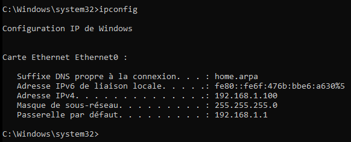
4. Configuration de l'Interface Web de pfSense
L'interface web de pfSense est accessible depuis le navigateur de Windows 10, avec les identifiants par défaut admin / pfsense.
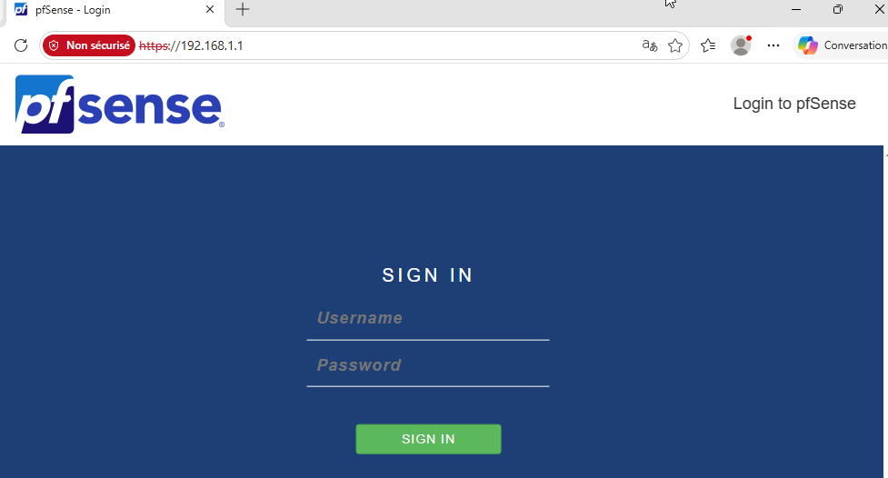
Au premier accès, pfSense lance un assistant de configuration en 9 étapes (nom d'hôte, domaine, DNS, fuseau horaire, interfaces WAN/LAN, mot de passe administrateur), garantissant une configuration de base cohérente et sécurisée avant toute manipulation avancée.
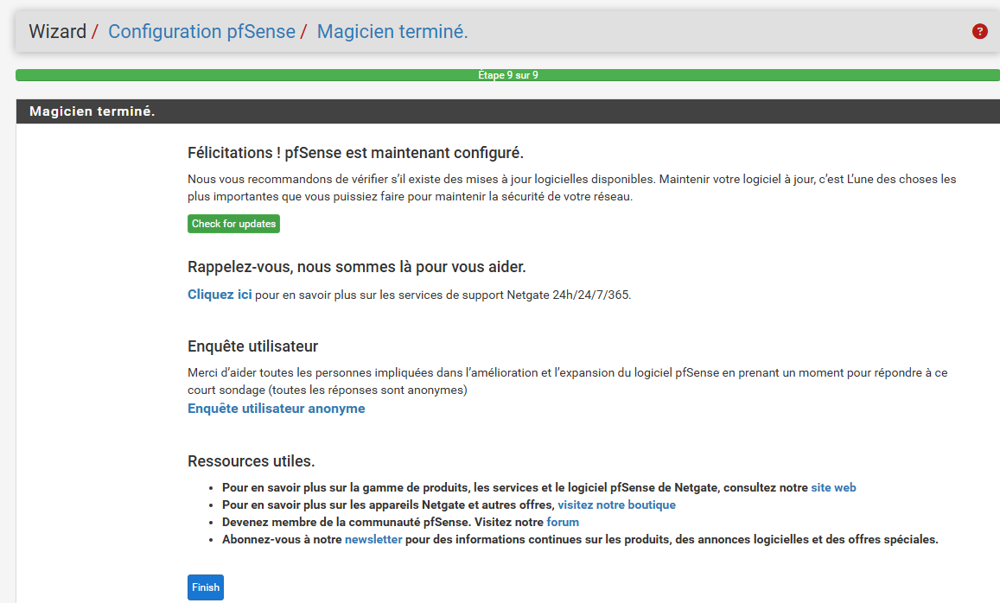
Une fois l'assistant terminé, on accède au tableau de bord principal, qui affiche en temps réel l'état des interfaces réseau, les informations système et les services actifs. C'est le point de départ des configurations avancées qui suivent.
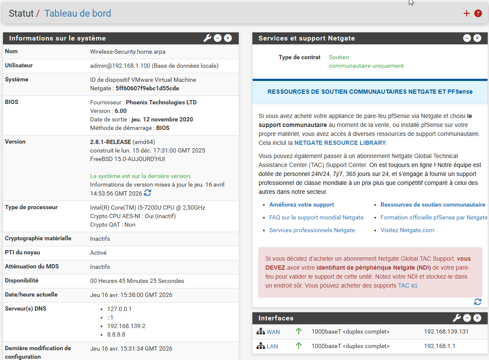
5. Installation et Configuration de FreeRADIUS
pfSense dispose d'un gestionnaire de paquets intégré. FreeRADIUS est disponible dans la liste des paquets officiels ; son installation ajoute un service RADIUS natif directement intégré à l'interface web, simplifiant la gestion des utilisateurs et des politiques d'accès.
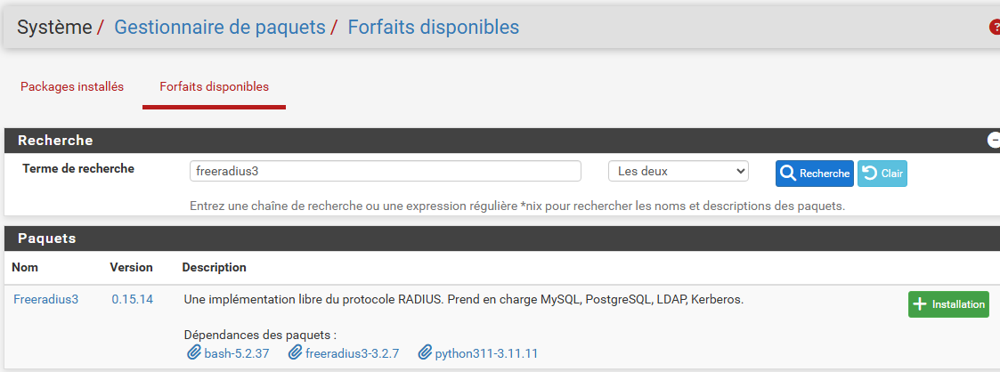
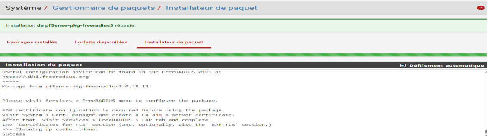
Configuration des interfaces d'écoute
La section « Interfaces » de FreeRADIUS définit sur quelle adresse IP et quel port le service va écouter les requêtes d'authentification. Le service est configuré ici pour écouter sur l'interface LAN de pfSense, permettant au portail captif de communiquer avec lui en local.
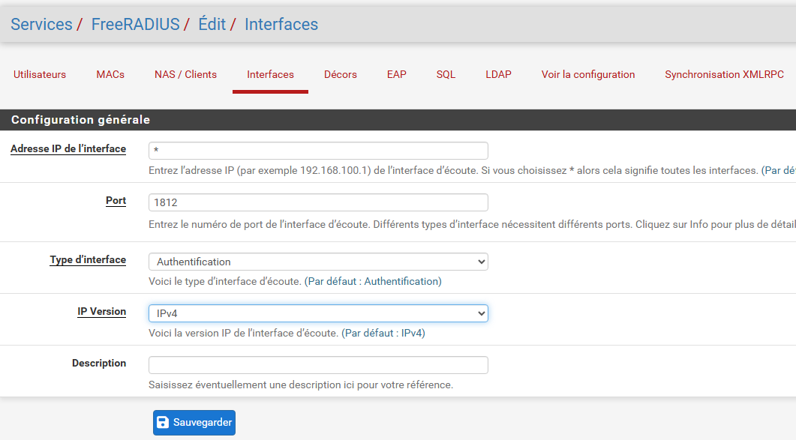
Configuration du client NAS
La section « NAS/Clients » définit quelles entités sont autorisées à envoyer des requêtes d'authentification au serveur RADIUS. Ici, le client NAS est défini avec l'adresse 127.0.0.1 (localhost) : pfSense et FreeRADIUS étant sur la même machine, le portail captif communique avec FreeRADIUS en interne, sans traverser le réseau. L'adresse de loopback est donc la configuration la plus directe, sécurisée et performante dans ce contexte de déploiement intégré.
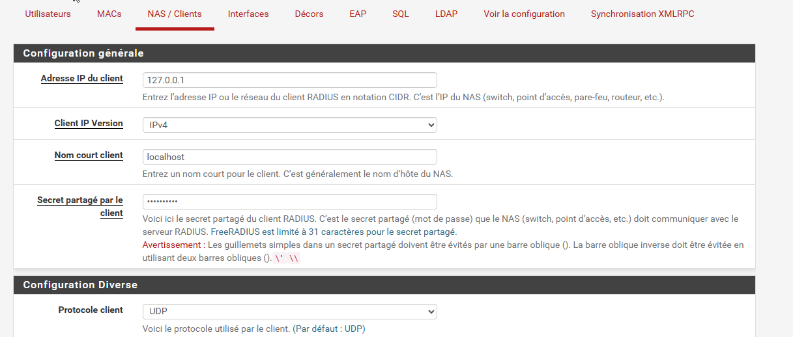
6. Création des Utilisateurs de Test
On crée un premier compte utilisateur « test-user » directement dans FreeRADIUS, qui servira à valider le fonctionnement du portail captif depuis Windows 10. La création d'utilisateurs dans FreeRADIUS permet de gérer une base locale d'identifiants sans dépendance à un annuaire externe.
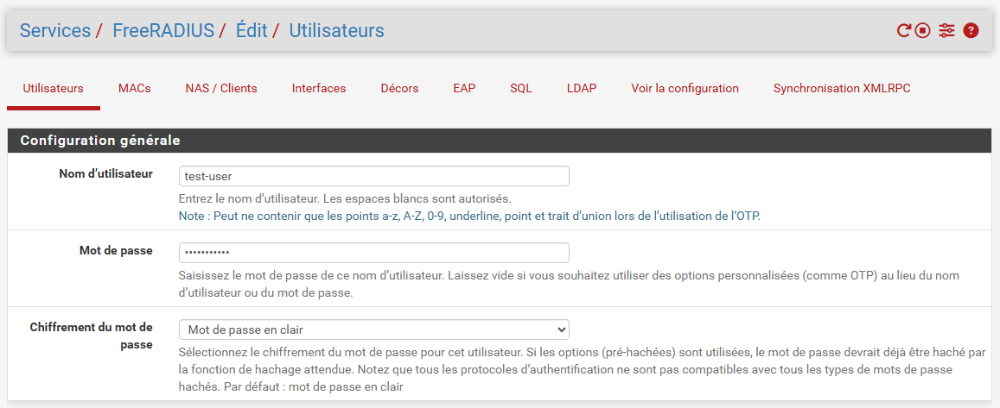
7. Serveur d'Authentification RADIUS
pfSense dispose d'un « User Manager » permettant de définir des serveurs d'authentification que les services pfSense pourront utiliser. Une base « Local Database » existait déjà par défaut, mais elle ne pouvait pas être adaptée directement au mode RADIUS. On crée donc un nouveau serveur d'authentification nommé RADIUS-local, configuré en mode Authentification et pointant vers FreeRADIUS en 127.0.0.1. Ce profil servira de serveur primaire pour le portail captif, tandis que « Local Database » servira de serveur de secours.
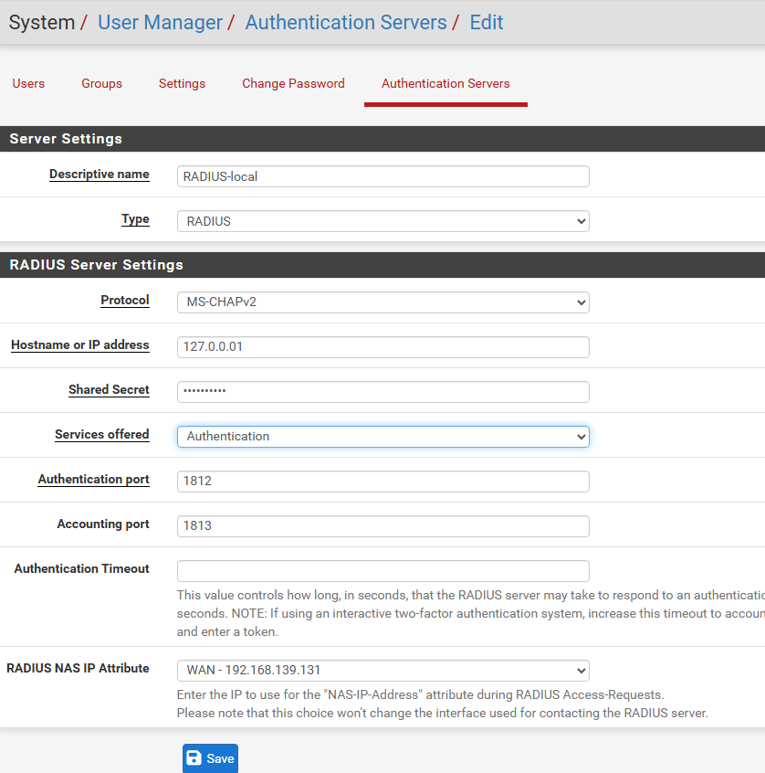
8. Configuration du Portail Captif
Le portail captif est lié à l'interface LAN « Pfsense-Radius ». Concrètement, tout trafic HTTP/HTTPS provenant d'un client connecté sur ce LAN sera intercepté par pfSense et redirigé vers la page de connexion du portail, jusqu'à authentification avec des identifiants valides.
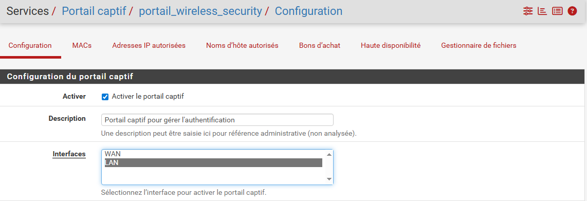
Le portail est configuré pour utiliser RADIUS-local comme premier serveur d'authentification, et Local Database comme serveur secondaire. Cette configuration illustre un principe fondamental : la redondance de l'authentification. Si le serveur RADIUS principal devient indisponible, le système bascule automatiquement sur la base de données locale, garantissant la continuité du service d'accès.
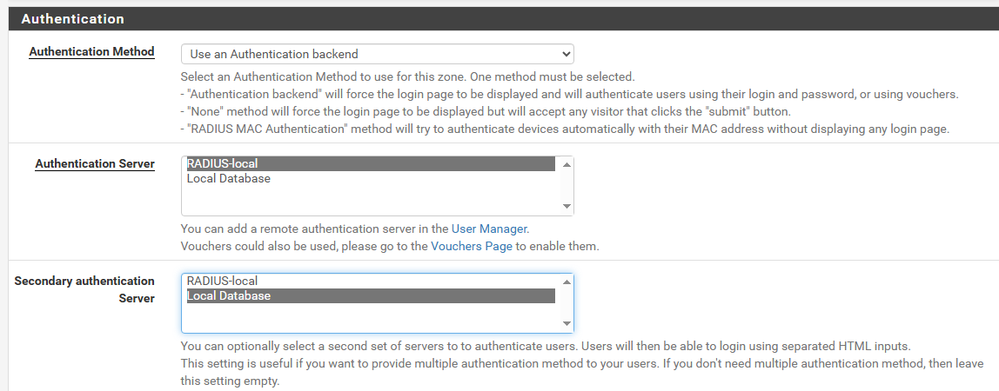
Le récapitulatif confirme la zone de portail captif créée, associée à l'interface LAN.
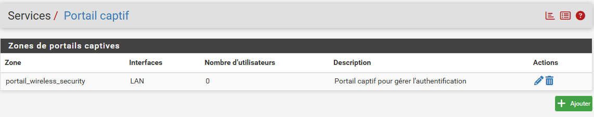
9. Tests du Portail Captif depuis Windows 10
Premier test : lorsque l'utilisateur tente d'accéder à un site web (ici Office.com), la connexion est interceptée par pfSense et redirigée vers la page d'authentification du portail. C'est le comportement attendu pour tout client non encore authentifié.
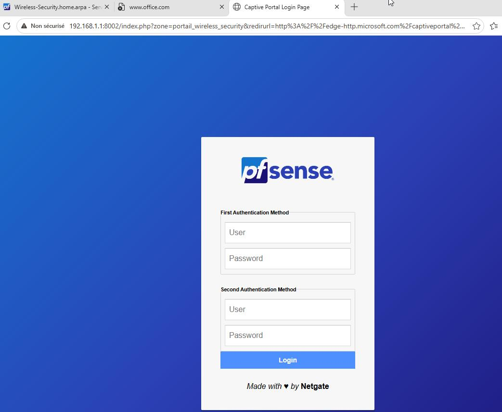
L'utilisateur saisit les identifiants du compte « test-user ». La requête d'authentification est transmise par pfSense au service FreeRADIUS via RADIUS sur localhost, qui valide les identifiants et retourne un accord d'accès, débloquant Internet pour cette session.
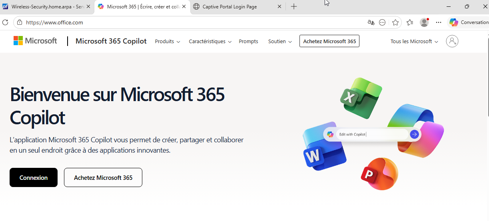
Les journaux du portail captif enregistrent chaque événement d'authentification : on y retrouve la session de test-user, avec son adresse IP, l'heure de connexion et la méthode d'authentification RADIUS. Ces logs sont essentiels pour l'audit et la traçabilité des accès réseau.
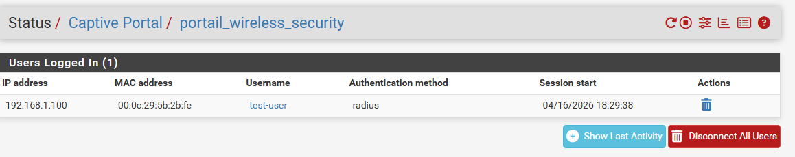
10. Tests du Portail Captif depuis Ubuntu
Pour valider le portail captif dans un scénario réel (un client quelconque sur le LAN, hors localhost), un second utilisateur « user-linux » est créé dans FreeRADIUS, et la VM Ubuntu est connectée sur le même LAN segment, recevant une adresse IP via DHCP au même titre que Windows 10.
L'un des avantages des systèmes Linux/Unix est leur capacité à détecter automatiquement les portails captifs. Lorsque Firefox tente une connexion réseau, il détecte que le trafic est intercepté et affiche une notification proposant d'ouvrir directement la page de connexion.
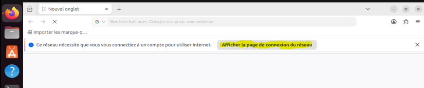
Le processus d'authentification est identique à celui réalisé depuis Windows 10 : pfSense transmet la requête à FreeRADIUS, qui valide les identifiants de « user-linux » et retourne un accord d'accès. YouTube devient alors accessible normalement.
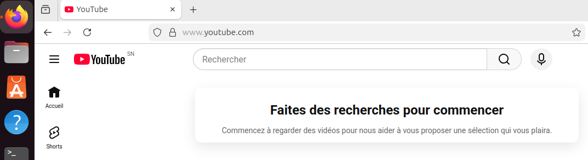
Les journaux confirment la connexion des deux utilisateurs, chacun authentifié via RADIUS-local, validant ainsi que la chaîne complète pfSense → FreeRADIUS → Portail Captif fonctionne de bout en bout pour des clients Windows comme Linux.
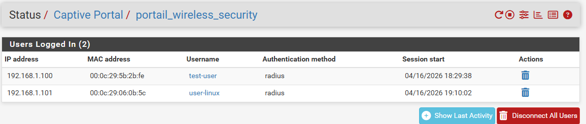
Conclusion
Ce lab a permis de déployer de bout en bout une infrastructure de contrôle d'accès réseau basée sur un portail captif avec authentification RADIUS, entièrement dans un environnement virtualisé. L'architecture mise en place démontre plusieurs concepts fondamentaux de la sécurité réseau sans fil : l'interception transparente du trafic non autorisé par pfSense, la délégation de l'authentification à un serveur RADIUS pour une gestion centralisée des identités, et la mise en place d'une redondance d'authentification avec RADIUS-local en serveur primaire et Local Database en secours.
Les tests effectués depuis deux systèmes d'exploitation différents (Windows 10 et Ubuntu) ont confirmé le bon fonctionnement de la solution, aussi bien en localhost qu'en accès réseau standard. Ce type d'infrastructure est directement applicable dans des contextes réels tels que les réseaux Wi-Fi d'entreprise, les hotspots publics, ou les environnements académiques nécessitant un contrôle strict et traçable des accès à Internet.